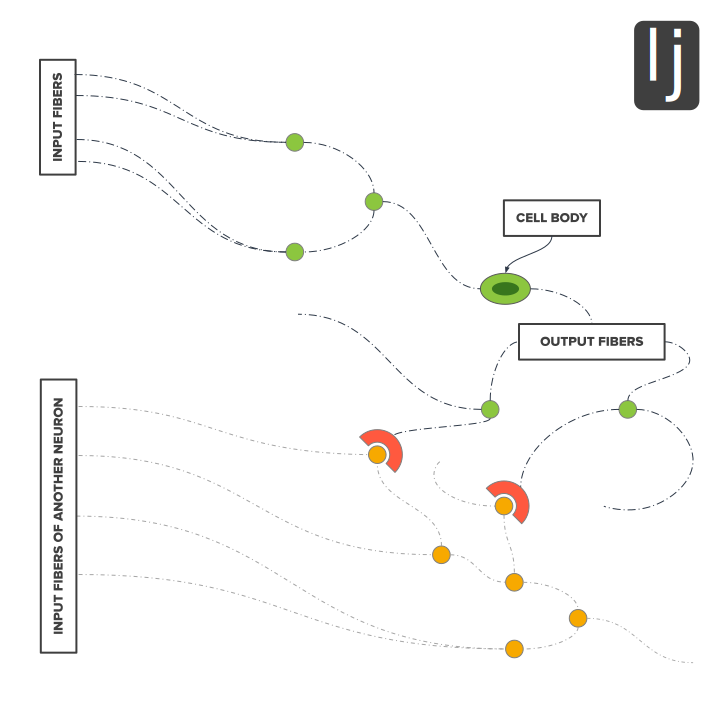

Chapter 3 How might it work inside the brain?
- Structure of your brain
- How does thinking work?
- Summary
“People get pleasure when two things in mind match." I have tried to show that the effect is widespread (see the set of 35 Instances in the Introduction), that it matters in anybody's everyday life, and that specialists in cognitive science may wake up to the effect any day. When they do, speculating about how it might work will be an obvious next step. But even before that, we can speculate and perhaps need to do so to satisfy the skeptical.
The point where people may have doubts is where I propose unity. "Reading is pleasant and relaxing" --- I think people will agree to that. “A stunning insight yields elation” --- there too I expect assent. But if the pleasure from the act of reading comes from a stream of micro matchings, as on Twig 7, a single one of those must be exceedingly small. And to suggest that the same mechanism is at work there as in a Eureka moment may not earn howls of support.
Well, could there be unity? Could a single mechanism work for the small and the large? We had better look at a mechanism to throw light on that point. Several mechanisms would be better but they are not easy to find; the possibility described in this chapter is the only one I know. It is merely conjecture, but rests on some firm facts about one's brain. At this point I will mention only those brain-features that are needed for the story --- “Explanations should be made as simple as possible but not more simple than that" ---A. Einstein. Readers interested in some more research that bears on the subject might look at the third item in the References.
Structure of Your Brain
First a story from the courtroom. A doctor was acting as expert witness for the defense but the prosecutor was giving him a difficult time:
Pr. You stated that on June 30 at 6 p.m. Mr. Jones was definitely dead. Had you checked his pulse?
Dr. No, I had not.
Pr. Had you established the absence of heart-beat?
Dr. No, I had not.
Pr. Then tell us, doctor, what makes you so confident that Mr. Jones was dead?
Dr. Well, I had his brain in alcohol in a jar on my desk.
Pr. Hum! That is not a customary line of evidence. Are we to accept it as incontrovertible proof that Mr. Jones was dead?
Dr. Well, I suppose maybe not. Maybe he is now out in California or somewhere practicing as a lawyer.
The useful fact there is that a brain will fit into a jar --- a somewhat large jar, between a quart and a half-gallon size, 1.3 or 1.4 liters --- or of course it fits neatly into the top half of a skull. For a representation, find a bowl about the size of your cranium and line the bowl with a wer hand-towel, crumpling the towel to make it all fit in. Then fill the remaining space with soft fruit and things with some texture, such as mushroom stalks and boiled onions and garlic. If you can invert it while keeping it full, you have an adequate model of a brain, with the cortex (hand-towel) on the outside and a collection of sub-cortical units filling the interior (mostly in pairs, one on the left and one on the right). In a real brain there are enough fibers, skins and ligaments to hold all the parts together, and for us the important point is: our thoughts are carried out mostly in the cortex, with much less involvement of the sub-cortical parts; conversely, our feelings and instincts arise in the fruit and vegetables, with only slight involvement of the cortex.
The next task is to convey something of the brain's complexity. The cortex alone contains more than 10 billion neurons, and each neuron has hundreds of input fibers and hundreds more output fibers (see Figure 2). The output-fiber tips communicate by touching the input fibers of neighboring neurons (or sometimes neurons quite far off), so there are many routes by which an electrical disturbance can travel through the whole web or network.

The many output fibers of one neuron may have junctions onto hundreds of different neighboring neurons.
How Does Thinking Work?
To the extent that such a web is like New York City or London or Tokyo, a thought is like the morning commute. Every workday morning, roughly the same pattern of activity occurs: thousands of agents travel their separate but coordinated paths, and the pattern repeats 20 times a month --- or, for a thought, a pattern of electrical pulses repeats itself perhaps 40 times a second. A difference is that in the brain many of the pulses are propagated around loops whereas commuting is mostly a one-way progression. But for the present purpose this does not matter; the image we need is of a pattern that is very complicated yet repeats itself almost exactly, time after time.
More specifically, let's distinguish the western suburbs from the northern. One thought might be like the commute from New Jersey while a second thought was like the commute from White Plains. The point is that many of the same components --- bus lines, subway stops etc. --- are used by both, but the pattern in time and space of the New Jersey rush-hour swarm remains recognizable and separate fro White Plains rush-hour swarm.
An outstanding feature of the human brain is the number of things it can do at one time. It takes care of our heartbeat, sweating and degree of alertness; any time we are awake it takes in sights and sounds; and at the same time, we are harboring thoughts, a fów consciously but many more floating in the back of our minds. For example, I am listening while Chris explains something to me but I am also thinking “It's nearly lunch-time” and “I should phone Pat before I go to lunch” (and perhaps also “What's that in my shoe, a speck of gravel?”). All these thoughts and more are buzzing at once but there is the matter of attention; some neuroscientists suggest that we attend to only one thought at a time. If we try to think of two things at once, they claim, the best we can actually do is to alternate, Alipping attention rapidly from one to the other and back again. No-one knows for sure but this is the behavior I want to envision.
Now for a moment let me turn to Christmas decorations and specifically to the strings of lights that people hang up --- they will provide an analogy. One might have two separate strings and a switch so that the two strings light up alternately. Even if they were hung from the same tree or windowsill the systems could be independent.
Alternatively, one might have two strings that were separate except that both used the same ten bulbs for their middle sections. Now turn on the alternator switch at two flips a second: in the first set-up, one string lights up in the first half-second, then the other lights up, and then back to the first; in chat set-up, each bulb lights up just once a second. But in the second set-up, the ten middle bulbs would light once as part of the first string and then again as part of the second string; they would light up twice as often as all the other bulbs. This is a useful analogy as we now go back to brains.
Okay, now suppose that I just saw someone leaving a coffee shop and think, “Hey, that was --- what's her name?" One part of my mind is running the recollection of the face and various ideas connected with the face, a pattern of activity like the New Jersey commute. Then in a second part of my mind I think of the name of a distant acquaintance. But in fact it is the wrong name --- so it is like the White Plains commute, wholly unrelated to the first. When I try to put the name with the face, it takes me, say, 25 milliseconds to give attention to the face and then 25 milliseconds to give attention to the name; then back to the face and re-run the pair of tho I give that up, try a new name and, this time, hit upon the correct one, the result is different. I attend to the face and ideas connected with the face; then I attend to the name and ideas connected with the name, and some of these ideas are the same both times. If I jump from face to name and back to face every 50 milliseconds, these particular ideas come up twice, that is, every 25 milliseconds. At the moment when I hit on the correct name, some parts of my brain start performing at twice the usual frequency (like the ten bulbs that are part of both strings).
If something like this occurred in a real human brain, the jump to a higher frequency could activate the pleasure system. The face and the name would be called to mind mostly in the cortex, but the pleasure system is probably down in the sub-cortex close to the better-known fear system. It has been claimed that, for its size, the human brain is the most complicated thing in the universe; certainly, there is room in the cortex for some gizmo that is actuated by a jump in frequency and sends a message down to release a sensation of joy.
The virtue of such a mechanism is its wide responsiveness. Two thoughts might be two rhyming words, or a sound and a memory, or any of the 35 instances of matching already listed. It is widely supposed that there are parts of the cortex devoted to putting thoughts or ideas together. These parts collectively are called the “association cortex” and they can receive all kinds of input --- from the senses, from memory, or from those parts of the brain where hopes, intentions and other imaginary things are conceived. It is just the association cortex that needs to contain the frequency sensor or sensors; we are not looking here at any system of voluminous extent.
The weakness of such a suggestion, on the other hand, is that it is merely a guess or speculation. But I have two remarks to make about that:
First, everybody knows that there is some such system. People do enjoy rhymes, jigsaws and all the rest. I personally have gained pleasure so I know my brain has this kind of responder, and you know that you have one too. We just don't know where its parts are situated or how it works.
Second, guessing at an answer helps to emphasize the question. I don't want readers to accept the above suggestion --- I want readers to think, “How else might it work?” I should love to see second and third possibilities, so that the hardworking and ingenious experimentalists could set to work deciding amongst them.
(This jump-in-frequency hypothesis is presented slightly more formally in the fourth item in the References.)
Summary
For now, let's see how far we have come.
I have listed 35 aspects of daily life and suggested that they all have one feature, matching, in common.
I have suggested that this is more than a curiosity, it is an effect that influences a person's whole life. To understand better where one stands today and where one is headed, including one's relations with other people and how to be more genuinely helpful, one would do well to understand this feature.
The suggestions are not outlandish. They have been mentioned inconspicuously by at least three other people (N. Humphrey, J. McCrone and J. Fost) and have almost been enunciated in the big-time neuroscience journals.
The suggestions are compatible with as much as is known about physical brains. The mechanism I have just described is grossly oversimplified, just a cartoon, and may be quite wrong but our feelings tell us that some such mechanism must be there; we just have to find it.
As far as daily life and the future are concerned, maybe that is all I have to say. The questions, Where did language come from? and why are we so different from other animals? are not practical. All the same, I find them interesting. Besides, they provide an occasion for looking at that fascinating object, a human infant, so let us hurry on into another chapter.